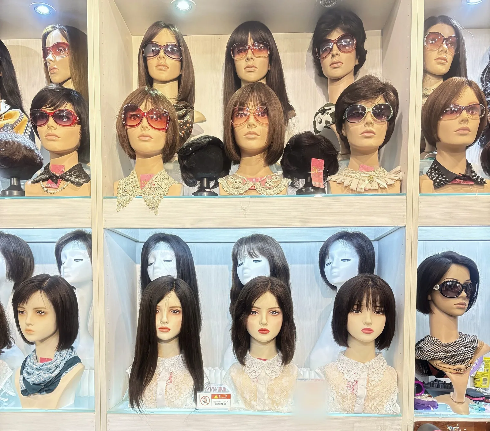
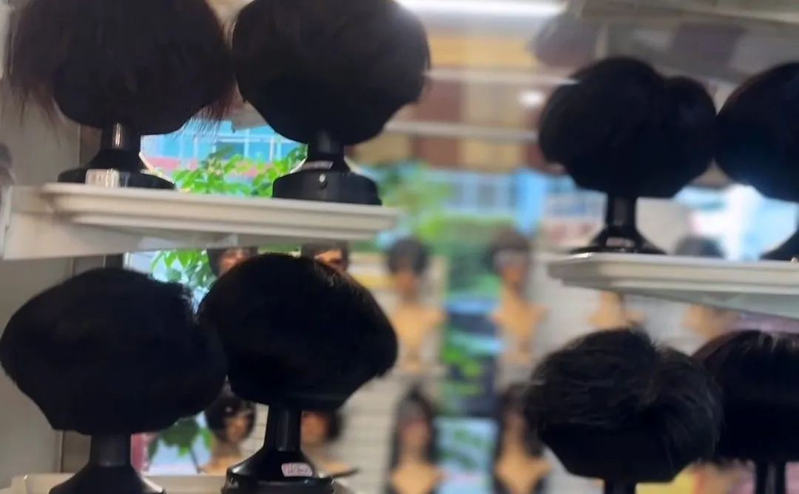

首頁 ／ 常見問題
常見問題
預約、交通、試戴、訂製、化療假髮與保養，先在這裡看一次；其他問題歡迎 LINE @995uevgh 或來電 02-2552-6562。
自 2004 年在鄭州路現址・Google 評論 4.9★

假髮保養與修理
真髮假髮或真髮髮片，本店和他店買的都可以帶來店裡保養、修理。
他店買的真髮假髮或髮片，請先帶來店裡讓設計師看過，才能判斷怎麼保養、怎麼修理。
一般纖維假髮和 Cosplay 假髮屬於消耗品：髮絲表面有一層保護膜，會隨著清洗慢慢流失，之後髮絲容易毛躁、打結，最後糾結成一團，所以不提供清潔、修理。
在本店購買的客人，享有本店客人專屬保養服務。
保養、修理都請親自帶來店裡；建議先用 LINE @995uevgh 或電話 02-2552-6562 預約。
到店之前
建議先預約，設計師一對一服務。第一次來不用緊張，家人也歡迎陪同。

有問題，歡迎留言或 LINE 問我們。LINE @995uevgh
問與答
需要先預約嗎？
建議先預約。設計師一對一服務，可用 LINE @995uevgh 或來電 02-2552-6562。週日公休。
怎麼走到店裡最方便？
從台北地下街 Y13 出口搭電扶梯上來，穿過小公園約 30 秒就到，很近。地址是台北市大同區鄭州路23號（三角窗）。
可以現場試戴嗎？
可以。現場百款假髮可試戴比較材質與髮型，家人也歡迎陪同。
訂製假髮要等多久？
訂製款依頭型手工製作，約需 3–4 個月；現成款試戴滿意、修剪好，當天就能戴走。男士補髮是手工製作，需要時間。
可以帶家人一起來嗎？
可以。試戴時家人也歡迎陪同，幫你從旁邊和後面看。
化療後多久會掉髮？什麼時候準備假髮？
每個人的藥物和療程不同。公開衛教資料常見是開始用藥後 2–3 週開始掉髮；建議療程開始前、頭髮還在時先來試戴，先準備好一頂現成假髮。實際請以醫療團隊說明為準。
挑化療假髮先看什麼？
先看三件事：透不透氣、頭圍合不合、髮際線自不自然。假髮內部有調節帶，化療後頭圍變小、假髮變鬆，可以自己調整。
化療前可以來店剃髮嗎？
化療前也可以來店討論剃髮。一對一進行，空間私密，建議先用 LINE 或電話預約。
頭皮敏感要怎麼固定？
整頂假髮一般用內建夾扣、鬆緊帶固定。化療期間頭皮較敏感，用膠帶前請先問醫師；也可以改用夾扣或魔術貼。
化療假髮和一般假髮差在哪？
最大的差別是「怎麼戴」。化療假髮常常每天戴、一戴很多小時，所以先看能不能舒服戴一整天；真正貼著頭皮的帽體和內網，比髮型、長度更重要。
開車可以停哪裡？有停車位嗎？
本店無附設停車位，建議搭捷運到北門站最方便；開車請利用附近的收費停車場。
到店要帶什麼？
帶近期的髮型照片、想要的造型參考圖；醫療客人可簡單整理頭皮狀況與療程時程。
別家買的假髮也可以拿來保養、修理嗎？
真髮假髮或髮片可以，本店和他店的都可以保養、修理；他店的請先帶來店裡讓設計師看過，才能判斷怎麼保養、怎麼修理。一般纖維假髮和 Cosplay 假髮屬於消耗品：髮絲表面有一層保護膜，會隨著清洗慢慢流失，之後髮絲容易毛躁、打結，最後糾結成一團，所以不提供清潔、修理。在本店購買的客人，享有本店客人專屬保養服務。建議先用 LINE @995uevgh 或電話 02-2552-6562 預約。
假髮能戴多久？
能戴多久，和每個人的生活習慣、保養用不用心有很大的關係，同一款假髮也會因人而異。照本店建議保養，一般參考至少可使用約兩年；實際仍因人而異，無法保證。